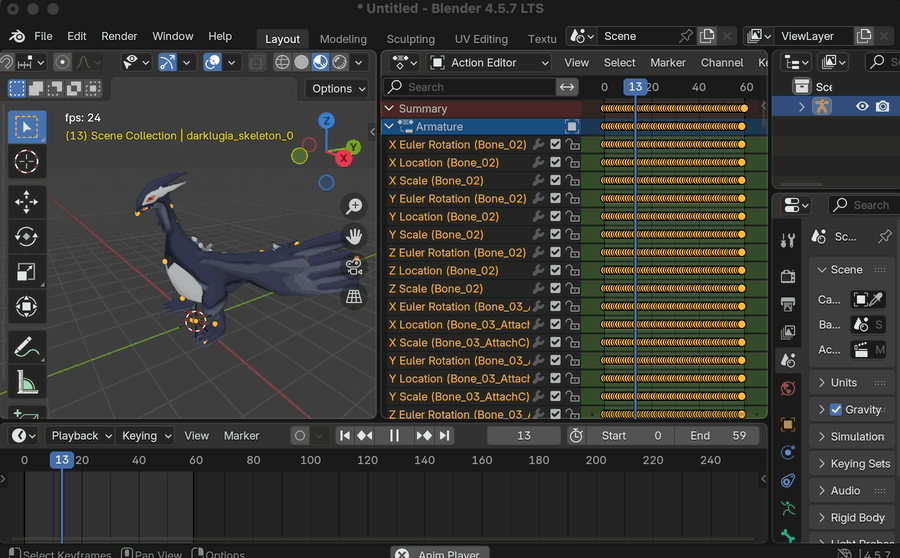

Blender HAL DAT Model Addon
A Blender addon for importing and exporting GameCube .dat models.
Built primarily for Pokémon Colosseum and Pokémon XD: Gale of Darkness,
with partial compatibility for other games that use the HAL DAT model format such as
Super Smash Bros. Melee, Kirby Air Ride,
Chibi-Robo! Plug Into Adventure! and Killer7.

What you can do with it:
- Open Pokémon models from Colosseum and XD inside Blender — with their bones, animations, textures, and shiny colors all intact.
- Edit those models — change shapes, textures, animations, or replace them with something completely custom.
- Save the edited model back out as a file the game can read, and play with it in-game.
- Save models from any source or custom models back out as files the game can read, and play with them in-game.
Get Started
Installation →
Install Blender 4.5.7 LTS and the addon. Start here if you haven't set things up yet.
Importing models →
Open Pokémon and other GameCube models in Blender. Skeleton, meshes, materials, textures, animations, and shiny variants — all loaded automatically.
Exporting models →
Save a Blender scene back to a .dat or .pkx the game can load.
Works for models you imported here, as well as custom models from other sources.
Community
If you're interested in reverse engineering the Pokémon games on the GameCube and Wii consoles, join us on Discord: discord.gg/xCPjjnv. That's also the best place to ask for help if you get stuck — there are people who can walk you through specific problems with your model or scene.